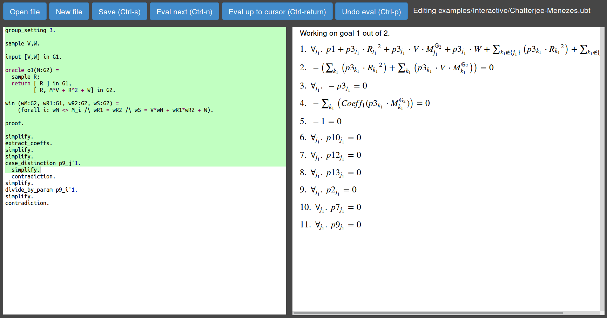

Introduction
Generic Group Analyzer Unbounded is a tool to automatically prove computational security statements in the Generic Group Model. It is especially designed to deal with security experiments where the attacker is allowed to interact with an Oracle an unbounded number of times and this interaction may be adaptive, i.e., new queries can depend on earlier Oracle responses.
This overcomes previous tools like the Generic Group Analyzer (Crypto 2014), paper available at http://eprint.iacr.org/2014/458, which cannot deal with adaptive adversaries; or its extension (PKC 2015), whose paper is available at http://eprint.iacr.org/2015/019 and it only deals with experiments where the number of queries is fixed.
The tool focuses on pairing-based cryptographic constructions, in particular, on schemes defined over bilinear groups.
A bilinear group is a tupple $(p, \mathbb{G}_{1}, \mathbb{G}_{2}, \mathbb{G}_{T}, g_{1}, g_{2}, e)$ where,
- $p$ is a prime number,
- $\mathbb{G}_{1}, \mathbb{G}_{2}, \mathbb{G}_{T}$ are cyclic groups of prime order $p$,
- $g_{1}$ is a generator of $\mathbb{G}_{1}$ and $g_{2}$ is a generator of $\mathbb{G}_{2}$,
- $e$, known as the pairing, is an efficiently computable map $e: \mathbb{G}_{1} \times \mathbb{G}_{2} \rightarrow \mathbb{G}_{T}$, that satisfies the bilinear property: $$\forall a,b \in \mathbb{Z}_{p}, \ e(g_{1}^{a}, g_{2}^{b}) = e(g_{1},g_{2})^{ab}$$ and it is non-degenerate, i.e, $e(g_{1},g_{2})$ is a generator of $\mathbb{G}_{T}$.
Therefore, the tool can be used to analyze the generic security of:
- Structure-Preserving Signatures (signature schemes defined over bilinear groups where the messages and signatures consist of group elements and the verification of signatures consists of evaluation pairing product equations).
- Algebraic Message-Authentication Codes.
- Assumptions.
Example
This is an example of a cryptographic construction that can be analyzed with the tool. It is taken from the AsiaCrypt 2015 paper, https://eprint.iacr.org/2014/635, by S. Chatterjee and A. Menezes:Re-randomizable Structure-Preserving Signature scheme in Type III
-
Setup ${\cal P}(1^{\lambda})$:
Return $\mathit{PP} = (p, \mathbb{G}_{1}, \mathbb{G}_{2}, \mathbb{G}_{T}, g_{1}, g_{2}, e) \leftarrow {\cal G}(1^{\lambda})$, where ${\cal G}$ is an efficient algorithm that on input $1^{\lambda}$ outputs a description of a bilinear group in Type III, with groups of order $p$ for a $\lambda$-bit prime $p$. -
Key generation ${\cal K}(\mathit{PP})$:
Choose $v,w \stackrel{\$}{\leftarrow} \mathbb{Z}_{p}^{*}$ and compute $\mathit{VK} = (\mathit{PP}, V, W)$ and $\mathit{SK} = (\mathit{PP}, v, w)$ as $$ V \leftarrow g_{1}^{v} \ \text{ and } \ W \leftarrow g_{1}^{w}$$ -
Signing ${\cal S}_{\mathit{SK}}(M)$:
For $M \in \mathbb{G}_{2}$, choose $r \stackrel{\$}{\leftarrow} \mathbb{Z}_{p}^{*}$ and compute the signature $(T_{1},T_{2},S) \in \mathbb{G}_{1}\times \mathbb{G}_{2}^{2}$ as $$ T_{1} \leftarrow g_{1}^{r}, \ \ \ \ \ T_{2} \leftarrow g_{2}^{r}, \ \ \ \text{ and } \ \ \ S \leftarrow M^{v} \cdot g_{2}^{w} \cdot g_{2}^{r^2} $$ -
Verification ${\cal V}_{\mathit{VK}}(M, (T_{1},T_{2},S))$:
Accept if and only if $T_{1} \in \mathbb{G}_{1}$, $M,T_{2},S \in \mathbb{G}_{2}$ and $$e(g_{1}, S) = e(V,M) \cdot e(W,g_{2}) \cdot e(T_{1}, T_{2}) \ \ \land \ \ \ e(T_{1}, g_{2}) = e(g_{1}, T_{2}) $$
Intuitively, this notion says that:
There is no polynomial time adversary that can produce a valid signature (with significant probability) on a message without the knowledge of the secret key, even if she has access to a signing Oracle that produces valid signatures for messages of her choice.
Note that the adversary must find a valid signature on a message that was not sent to the Oracle.Installation
-
Install Opam.
In Ubuntu,
In OS X, use homebrew,apt-get install -y ocaml ocaml-native-compilers opam libtool libtool-bin libgmp-dev libffi-dev m4 libz-dev libssl-dev camlp4-extrabrew install opam -
Install the right compiler and the right libraries:
opam pin add gga-unbounded GGA_UNBOUNDED_DIR -n opam install gga-unbounded --deps-only -
The tool uses Sage,
Pari/GP and
Z3 as backend.
- For Sage, you should be able to start
sage -python. (We used SageMath, Version 6.8). - For Pari/GP, you need to be able to compile and link C code with libpari. On Ubuntu, the package is named pari-gp and on OS X, you can install Pari/GP with homebrew.
- We use a Z3 wrapper written in Python. Visit the Z3 GitHub project.
- For Sage, you should be able to start
-
Set the path variable:
export UBT_PATH=GGA_UNBOUNDED_DIR -
To compile the tool use
make. This will produce two executables:- ubt.native to perform automated analysis.
- wsubt.native to communicate via web sockets with the interactive tool.
- (Interactive Mode)
The interactive mode uses MathJax. You can install
it, by changing to the web directory, i.e.,
cd web/and runningmake get-mathjax.
Usage
Input files
The description of the cryptographic construction and the security game is provided to the tool as an input file. As an example, we present the input file Chatterjee-Menezes.ubt expressing the Structure-Preserving Scheme described above and the EUC-CMA security experiment:group_setting 3.
sample V,W.
input [V,W] in G1.
oracle o1(M:G2) =
sample R;
return [ R ] in G1,
[ R, M*V + R^2 + W] in G2.
win (wM:G2, wR1:G1, wR2:G2, wS:G2) =
(forall i: wM <> M_i /\ wR1 = wR2 /\ wS = V*wM + wR1*wR2 + W).
Automated mode
You can use the automated algorithm by running, e.g.:./ubt.native examples/Automatic/Chatterjee-Menezes.ubtsimplify.
extract_coeffs.
simplify.
simplify.
case_distinction p9_j'1.
simplify.
contradiction.
simplify.
divide_by_param p9_i'1.
simplify.
contradiction.
Proven!
Time 3.49 seconds
We note that there may be several ways to prove the statement, i.e., several sequences of commands representing a valid proof. The automatic algorithm follows a heuristic to apply the available rules, therefore, the produced result may not be the shortest or simplest existing proof.
Interactive mode
We provide an interactive web interface where you can execute commands while watching the current state of the proof. This can be used to analyze given proofs or to produce customized ones.To start the web interface, execute:
./wsubt.native examples/Interactive/Chatterjee-Menezes.ubtOpen the following URL in your browser (websocket support required):
file:///GGA_UNBOUNDED_DIR/web/index.html
Files: examples/Interactive/Chatterjee-Menezes.ubt
On the left side there is the code window, were you must define the security experiment and you can execute commands. On the right you can see the equations associated with the current state of the proof.
Visit the Documentation section for details about how use the interactive mode.